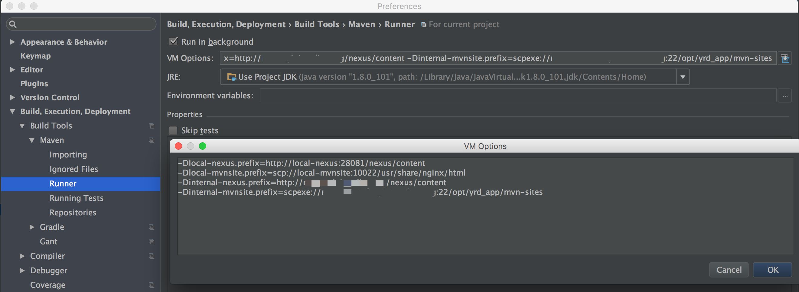

oss-build
Module to centralize common resources and configuration for open source stack builds.
- Parent pom.xml for maven projects
- Maven site
- CI config
- IDE config
- Code style
- Java version
- Project encoding
Usage
Set oss-build as parent in maven projects.
<parent>
<groupId>cn.home1</groupId>
<artifactId>oss-build</artifactId>
<version>${oss-build.version}</version>
</parent>
No dependency will be imported, oss-build only responsible for software engineering, it does not interfering dependency management.
Variables
oss-build support code environment segregation and build deploy segregation.
The cost is you will need to provide some variables: + nexus address + docker-registry address + checkstyle config location + pmd config location …
maven plugins imported by oss-build
-
docker-maven-plugin
Build docker images, push them into docker registry
-
git-commit-id-plugin
Generate src/main/resources/git.properties
-
jacoco-maven-plugin
Test coverage report
-
maven-compiler-plugin
Java source and target version, source encoding
-
maven-enforcer-plugin
Avoid dependency conflict
-
maven-source-plugin
Build jar of source code
-
gitflow-maven-plugin
gitflow branch model
profiles in oss-build
-
dependency-check
Generate a detailed dependency report, use mvn -Ddependency-check=true to active, need to be used together with site profile. This takes a long time, disabled by default.
-
git-commit-id
Auto enable if .git exists, generate src/main/resources/git.properties by git-commit-id-plugin
-
jacoco
Enabled by default, to disable, set -Djacoco=false. Generate test coverage report by jacoco-maven-plugin.
-
internal_nexus
Use nexus service at organization internal network. Deploy maven site into organization internal mvnsite.
-
local_nexus
Use nexus service at user’s local (see docker-nexus3). Deploy maven site into local mvnsite (see docker-proxy).
-
site
Generate maven site for project, run mvn -Dsite=true site site:stage site:stage-deploy to active this profile and build site, set -Dsite.path=oss-build-snapshot to specify upload directory.
IDE plugins
- IntelliJ Lombok (And enable annotation processing)
- IntelliJ&Eclipse Grep Console
- home1-oss/src/main/site/markdown/CODESTYLE.md


IntelliJ Maven runner and importing VM args
  Note: These screenshots is only represents the location of the configuration.
Note: These screenshots is only represents the location of the configuration.
Jira and gitlab integration
Add args on maven site
jira.projectKey # jira上的projectKey jira.user # jira用户名 jira.password # jira密码
GPG issue
gpg: signing failed: Inappropriate ioctl for device
To solve the problem, you need to enable loopback pinentry mode.
Add this to ~/.gnupg/gpg.conf:
use-agent pinentry-mode loopback
And add this to ~/.gnupg/gpg-agent.conf, creating the file if it doesn’t already exist:
allow-loopback-pinentry